| |
|
YÜZEY MODELLEME: Temel İşlemler
|
Sabit Kotlu Kılavuz Çizgi ve Şev Kesişimi
3D Çizgi ve 3D Paralel 3D Çizgi ve Doğrultman Bir Şev Üzerindeki Çizgi Bir Yüzeyle Kesişen Koni Oluşturma Maksimum Eğimli Bir Yol Çizme Yardımı
Boyuna Profil Bir Arazi Kesitini ve Diğer Yüzeyleri Görüntüleme (Kesit) Bir Yüzeyi Kota Getirme Eğik Düzlemler Üzerinde Çizim. Düzlem Şeması Yüzeylerin Kesişimi Taşkın Alanlarının Hesaplanması Kapalı Alanı Böl SAM'a (.ttp) Göre Uzat/Kırp Genel Bilgiler 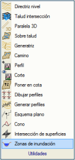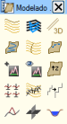Yüzey modellemenin temel işlemleri, [Yardımcı Programlar] alt menüsü altında gruplandırılmıştır ve ayrıca YÜZEY MODELLEME modülüne girildiğinde otomatik olarak açılan özel bir araç çubuğu aracılığıyla da doğrudan erişime sahiptir. Bu yardımcı programlar, kullanıcıya koniler ve temel şevler gibi basit yüzeyleri hızlı bir şekilde elde etme, ayrıca yüzeyler arasında kesişim hesaplama, kotlarını değiştirme, maksimum eğimini takip eden bir yol oluşturma yardımı, hızlı profil kesitleri alma gibi işlemleri yapma imkanı tanır. Basit Yüzeyler Oluşturma Yardımcı Programları Kavramsal olarak yüzeylerin oluşturulması, aşağıdaki şekilde belirtildiği gibi bir kılavuz çizgi (directriz) ve bir doğrultmanın (generatriz) katılımını gerektirir:  Doğrultman ve Kılavuz Çizgi Kavramı Bu bölümde, ISTRAM®/ISPOL®'ün YÜZEY MODELLEME modülünde yer alan temel yüzeylerin oluşturulması için üç yöntem açıklanmaktadır: Üçüncü yöntem, yukarıdaki şekilde gösterilen yüzey oluşturma modeline (vektörel kılavuz çizgi ve doğrultman) tam olarak karşılık gelirken, ilk iki yöntem doğrultmanı bir dizi yardımcı parametre ile tanımlar. Ancak, her yöntemin, kullanıcının bir yöntemi veya diğerini kullanmaya karar verirken değerlendirmesi gereken avantajları ve dezavantajları vardır. Sabit Kotlu Kılavuz Çizgi ve Şev Kesişimi Bu yöntem, bir kılavuz çizgiden başlayarak, kullanıcı tarafından önceden belirlenmiş yukarı, aşağı veya yatay bir eğime sahip bir yüzey oluşturur, topografik yüzeyle kesişimini belirler ve bunu yeni bir tipte eşyükselti eğrileriyle temsil eder. Yüzey, kullanıcı tarafından önceden belirlenen kotta veya ondan tanımladığı mesafede sona erecektir; aynı şekilde, yapımı tasarımcı istediğinde sonlandırılabilir veya topografik yüzeyi geçene kadar büyümesine izin verilebilir. Yöntem iki adımdan oluşur:
Her iki durumda da program, ilk ve son segment üzerinde araziyle kesişimi belirler, sabit kotlu kılavuz çizgiyi (L40 tipi çizgi) oluşturur ve fazla çizgi parçalarını siler. Kesişim yoksa, program bunu kapalı bir çizgi olarak kabul eder.
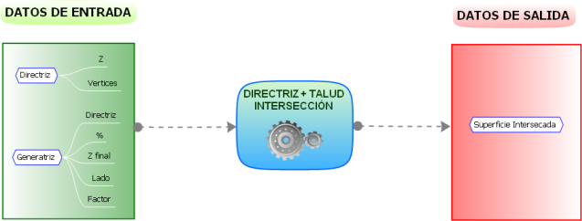
Tüm veriler bildirildikten sonra, hesaplama başlar ve program elde edilen eşyükselti eğrilerini birer birer sunar ve kullanıcının bunları kabul etmesini bekler. Eğer kullanıcı bir çizgiyi reddederse, oluşturma durur. Toprak işleri modülü belirli bir kot için makul bir çözüm bulamadığında, hesaplama için kullandığı çizgiyi geçici olarak sarı renkte sunar ve "Eksik çözüm. Kabul ediliyor mu?" mesajını gösterir ve operatör EVET veya HAYIR yanıtıyla karar verir. Eğer yanıt HAYIR ise çizgi silinir, EVET ise kabul edilir ve tasarımcının güzergahını manuel olarak değiştirmesine olanak tanır. 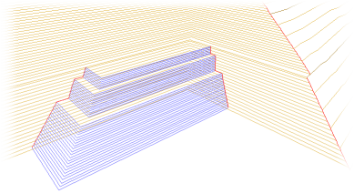
Kılavuz Çizgi + Şev Kesişimi yöntemiyle yüzey elde etme örneği 3D Çizgi ve 3D Paralel Bu yöntem, mevcut bir çizgiye paralel bir dizi çizgi oluşturmayı sağlar. Eğer başlangıç çizgisi üç boyutlu ise (her noktada farklı kot), sonuç çizgiler de öyle olur. Program mesafeyi, hangi tarafa, vb. ve oluşturacağı ara bölüm veya çizgi sayısını sorar. Yöntem iki adımdan oluşur:
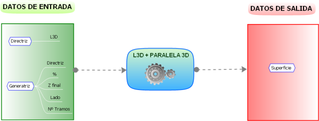
3D Çizgi ve Doğrultman Bu yöntemi kullanarak, kılavuz çizgi olarak kullanılan üç boyutlu bir çizgiyi takip ederek kayan bir enkesit (doğrultman) kullanarak bir yüzey elde edilebilir. Yöntem aşağıdaki adımlardan oluşur:
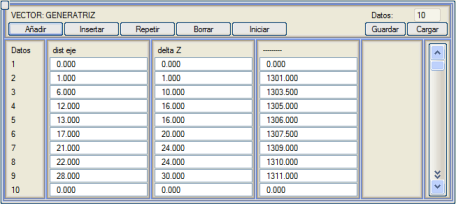
Bir Şev Üzerindeki Çizgi Bir ISTRAM®/ISPOL® üç boyutlu çizgisi artı bir enkesit eğimi, geometrik olarak bir geçiş yüzeyi tanımlar. Bu seçenek, [Yardımcı Programlar] alt menüsündeki Şev Üzerinde seçeneğine veya araç çubuğundaki  simgesine tıklandığında erişilebilir ve o teorik yüzey üzerinde başka çizgiler oluşturmayı sağlar. simgesine tıklandığında erişilebilir ve o teorik yüzey üzerinde başka çizgiler oluşturmayı sağlar.Yeni çizgilerin eşyükselti eğrisi olması gerekmez ve belirli bir boyuna eğimle oluşturulabilirler. 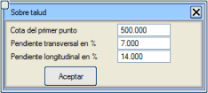Toprak işleri modülü, kılavuz çizginin gidiş yönünü ve enkesit eğiminin işaretini kullanarak şevin hangi tarafa ve hangi yöne uzanacağını belirler. Yeni çizginin kotu, başlangıç noktasının kotuna atıfta bulunur, çünkü boyuna eğim, yeni çizgi boyunca kotu değiştirecektir. Bu seçenek, örneğin bir açık ocak madeninde bir rampa tasarlarken çok kullanışlıdır. Bu durumda, prosedür aşağıdaki gibi olacaktır:
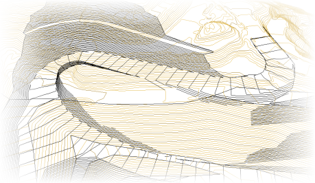
Şev üzerinde çizgi kullanım örneği Bir Yüzeyle Kesişen Koni Oluşturma Bu seçenek, [Yardımcı Programlar] alt menüsündeki Koni seçeneğine veya araç çubuğundaki  simgesine tıklandığında erişilebilir ve bir noktada tepe noktası olan ve verilen bir eğime sahip olan koninin bir yüzey üzerine oturduğu koniyi belirler. simgesine tıklandığında erişilebilir ve bir noktada tepe noktası olan ve verilen bir eğime sahip olan koninin bir yüzey üzerine oturduğu koniyi belirler.Bir iletişim kutusu aracılığıyla program şunları ister:
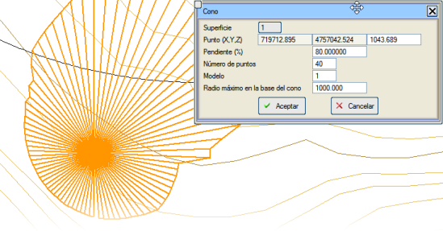
Kutudaki veriler değiştirildikçe, program koninin nasıl görüneceğini gösterir. Kabul edildikten sonra iki tür çizgi oluşturulur:
Yüzeylerle Basit Hesaplamalar ve İşlemler Bu başlık altında, bir hacim hesaplaması, maksimum eğimli bir yol oluşturma, iki yüzey arasındaki kesişim gibi basit bir hesaplama elde etme amacıyla yüzeyler üzerinde çalışmaya yönelik araçlar toplanmıştır. Maksimum Eğimli Bir Yol Çizme Yardımı 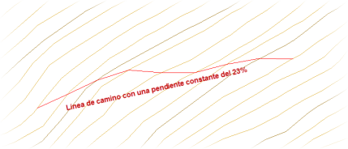Bu yardımcı program, [Yardımcı Programlar] alt menüsündeki Yol seçeneğine veya araç çubuğundaki  simgesine tıklandığında erişilebilir ve temel topografya üzerinde sabit eğimli yardımcı yolların çiziminde bir yardım seçeneği oluşturur. simgesine tıklandığında erişilebilir ve temel topografya üzerinde sabit eğimli yardımcı yolların çiziminde bir yardım seçeneği oluşturur.Bu düğmeye basıldığında, program komut satırında yol için istenen eğimi sorar. O zaman kullanıcı, bir eşyükselti eğrisinin bir noktasına tıklayarak yolun noktalarını girmeye başlamalıdır, böylece girilen noktanın kotu belirlenebilir. Girilen her noktada, toprak işleri modülü, yolun eğiminin sabit ve girilen değere eşit kalması için bir sonraki noktanın olası konumlarını önerir. Bu iletişim kutusunda aşağıdaki bilgiler tespit edilebilir:
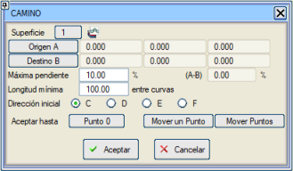
Boyuna Profil Bu seçenek, bir veya daha fazla yüzey üzerinde bir veya daha fazla çizgiyi takip ederek profiller oluşturmayı sağlar. A[Yardımcı Programlar] alt menüsündeki Profil seçeneğine veya araç çubuğundaki  simgesine tıklandığında erişilebilir. Daha fazla bilgi için Profil'e gidin. simgesine tıklandığında erişilebilir. Daha fazla bilgi için Profil'e gidin. Bir Arazi Kesitini ve Diğer Yüzeyleri Görüntüleme (Kesit) Bu seçenek, [Yardımcı Programlar] alt menüsündeki Kesit seçeneğine veya araç çubuğundaki  simgesine tıklandığında erişilebilir, haritanın iki noktasına tıklanmasını ister, ardından program Kontrol → Yüzey Kontrolü menüsünde tanımlanan tüm yüzeyler üzerindeki kesiti gösteren dikey bir kesit oluşturur. simgesine tıklandığında erişilebilir, haritanın iki noktasına tıklanmasını ister, ardından program Kontrol → Yüzey Kontrolü menüsünde tanımlanan tüm yüzeyler üzerindeki kesiti gösteren dikey bir kesit oluşturur.Bu araç döngüsel modda çalışır. Yeniden çizim yapıldığında veya yakınlaştırıldığında, profil çizimi ve kesit planı kalır. Kullanımı bittiğinde, ESC tuşuna basıldığında, bu araç kullanılarak elde edilen son kesit olan corte.per profilini düzenleyebileceğimiz bir iletişim kutusu sunulur. Bir Yüzeyi Kota Getirme Bu seçenek, [Yardımcı Programlar] alt menüsündeki Kota Getir seçeneğine veya araç çubuğundaki  simgesine tıklandığında erişilebilir ve kotu bilinmeyen veya hatalı olan başka bir yüzeye ait tüm çizgileri ve sembolleri, kotu geçerli olan çizgilerden oluşan bir yüzey kullanarak 3D'ye getirmeyi sağlar. simgesine tıklandığında erişilebilir ve kotu bilinmeyen veya hatalı olan başka bir yüzeye ait tüm çizgileri ve sembolleri, kotu geçerli olan çizgilerden oluşan bir yüzey kullanarak 3D'ye getirmeyi sağlar.Bu ikinci yüzeyin çizgileri, Harita Yüzeyleri Kontrolü'nde bildirilen enterpolasyon moduna göre yerleştirilir.
Profilleri Çizme ve Oluşturma Profilleri Çiz seçeneği, [Yardımcı Programlar] alt menüsünde, ayrıca araç çubuğundaki  simgesinden de erişilebilir ve GÜZERGAH PROJESİ modülünün enkesit paftaları elde etme aracına erişim sağlar. simgesinden de erişilebilir ve GÜZERGAH PROJESİ modülünün enkesit paftaları elde etme aracına erişim sağlar.Benzer şekilde, Profilleri Oluştur seçeneği, [Yardımcı Programlar] alt menüsünde, ayrıca araç çubuğundaki  simgesinden de erişilebilir ve kullanıcının enkesitler elde edeceği bir eksen tasarlayabilmesi için GÜZERGAH PROJESİ modülünün plan tasarımı menüsüne erişim sağlar. simgesinden de erişilebilir ve kullanıcının enkesitler elde edeceği bir eksen tasarlayabilmesi için GÜZERGAH PROJESİ modülünün plan tasarımı menüsüne erişim sağlar.Eğik Düzlemler Üzerinde Çizim. Düzlem Şeması Bu seçenek, [Yardımcı Programlar] alt menüsündeki Düzlem Şeması seçeneğine veya araç çubuğundaki  simgesine tıklandığında erişilebilir ve bir vektörel çizim oluşturmayı ve ardından bir taban noktası ve bir tepe noktası seçerek (yakalama modlarını kullanarak) eğik bir düzleme uyarlamayı sağlar. simgesine tıklandığında erişilebilir ve bir vektörel çizim oluşturmayı ve ardından bir taban noktası ve bir tepe noktası seçerek (yakalama modlarını kullanarak) eğik bir düzleme uyarlamayı sağlar.Üzerine çizim yapılan düzlem, taban noktası ile tepe noktasını birleştiren çizginin maksimum eğimine sahip olan düzlemdir. Vektörün ilk noktası taban noktasına ve sonuncusu tepe noktasına yakalanır ve bu noktaların çakışması için çizim yeniden ölçeklendirilir. Yüzeylerin Kesişimi 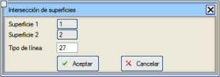 Bu seçenek, [Yardımcı Programlar] alt menüsündeki Yüzeylerin Kesişimi seçeneğine veya araç çubuğundaki  simgesine tıklandığında erişilebilir ve iki yüzey arasındaki kesişim noktalarını oluşturur. simgesine tıklandığında erişilebilir ve iki yüzey arasındaki kesişim noktalarını oluşturur.Kesiştirilecek iki yüzeyi seçtikten sonra, program birinci yüzeyin çizgilerinin ikinci yüzey üzerindeki kesitlerini analiz ederek ortak kot noktalarını (dolayısıyla kesişimleri) bulur ve bir daire ile işaretler. Ardından bu noktaları birleştirerek belirtilen çizgi tipiyle kesişim çizgisini oluşturur. 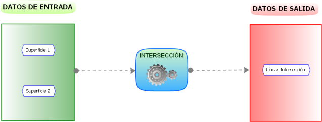
Analiz sistemi göz önüne alındığında, hesaplama sürelerini en aza indirmek için ilk yüzey olarak en basit olanı vermek tavsiye edilir. 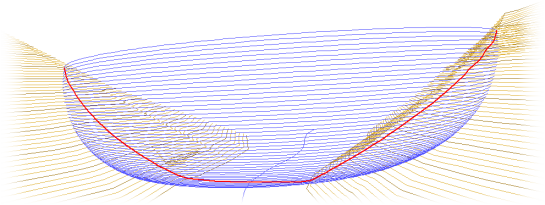
Yüzey kesişimi örneği Taşkın Alanlarının Hesaplanması Bu seçenek, [Yardımcı Programlar] alt menüsündeki Taşkın Alanları seçeneğine veya araç çubuğundaki  simgesine tıklandığında erişilebilir ve en az bir yüzeyin tanımlandığı bir EDM ve bir nehir çizgisi üzerinden taşkın alanlarını hesaplamayı sağlar. simgesine tıklandığında erişilebilir ve en az bir yüzeyin tanımlandığı bir EDM ve bir nehir çizgisi üzerinden taşkın alanlarını hesaplamayı sağlar.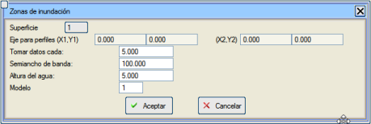
Bu seçenek seçildikten sonra, program kullanıcıdan nehir çizgisini seçmesini ister (gerçek kotu olmalıdır) ve ardından aşağıdaki bilgilerin girilmesi gereken bir iletişim kutusu gösterilir:
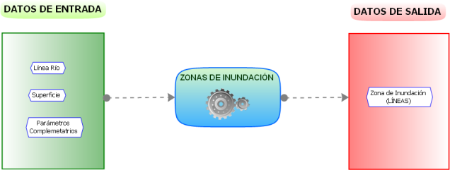
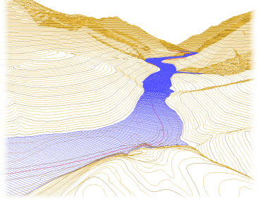Seçenek, yüzey üzerinde enkesitler hesaplar ve bunların, o profildeki nehir çizgisinin kotu artı su yüksekliğine eşit bir kota sahip yatay bir çizgi ile kesişimini belirler. Son olarak, kesişim noktaları planda birleştirilerek taşkın alanını belirleyen kontur oluşturulur.
Kapalı Alanı Böl Bu araç, Kapalı Alanı Böl ve Sabit Noktadan Kapalı Alanı Böl aracı gibi çalışır, ayrıca kapalı alan (araç bu çizginin bir üçgenlemesini yapar) ile bir SAM arasındaki hacme bağlı olarak bölme yapmayı sağlar: 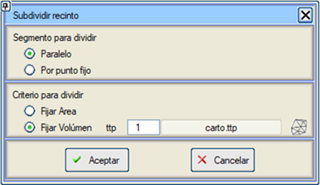 SAM'a (.ttp) Göre Uzat/Kırp Bu araç, bir SAM dosyasının yüzeyini kullanarak, belirtilen bir tipteki iki noktalı çizgileri uzatır veya kırpar. Değiştirilen nokta en yüksek veya en alçak olan olabilir.  |
||||||||||||

 simgesine tıklandıktan sonra, kılavuz çizginin kotunun ve onu oluşturacak köşe noktalarının (X,Y) girildiği bir iletişim kutusu belirir. Kot girildiğinde, seçilen kotun eşyükselti eğrileri (eğer varsa) yeşil renkte, verilen kotun hemen üstündeki ve altındaki ise beyaz renkte vurgulanır.
simgesine tıklandıktan sonra, kılavuz çizginin kotunun ve onu oluşturacak köşe noktalarının (X,Y) girildiği bir iletişim kutusu belirir. Kot girildiğinde, seçilen kotun eşyükselti eğrileri (eğer varsa) yeşil renkte, verilen kotun hemen üstündeki ve altındaki ise beyaz renkte vurgulanır.  simgesine tıklandığında,
simgesine tıklandığında, 
 simgesine tıklandığında bildirilir
simgesine tıklandığında bildirilir simgesine tıklandığında yapılır
simgesine tıklandığında yapılır